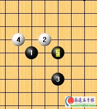
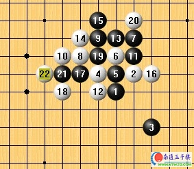

流星系列变化
#1 流星系列变化 作者：有志青年 发表时间：2007-3-26 12:08:53
〔有志注：原文发表于裁决殿家族的网站，内容参考了跳蚤老师的部分思考，至于流星开局到底什么定论我觉得不重要，重要的是大家听高手分析局面〕
说下流星这个开局好了。这个开局算起来，应该说是黑优，有个定语，黑难局。这么说好了，定下来之后，都说是黑优的局面，但是，需要棋手做棋，好好靠自己的水平去把握优势，将优势转化为胜势。也就是，白也未必是必败。
插个题外话，本人当年有次和个高手下棋，那人开流星，连开5盘，本人连换5盘，然后，很华丽地挂了。简单说，呃，那天选择地变化是白胜。挂了活该。
废话虽然很废，但是，还是有必要下下。这个5，一打，怎么胜，自己找去。

流星二打，发个比较流行的定吧。当然，还有其它很多种针对这个5的定，个人喜欢了。

本来说这个26是白胜，也的确是相当经典的手法，但是黑27冲个四之后，再29，白原来的抓禁手法便不成立了。由于白左边无法获胜，这个时候要去防守右边，近乎是无法完成的任务。局面很明显的是黑优，至于怎么把黑优转化为黑胜，各人能耐了。
这个五，就是今天说的关键了。
看下面的帖子之前，我们不妨来观察下局面。虽然说，白的活二比黑的少，但是，由于黑3距离1，5，6遥远，而且和1形成的二无法发挥威力，甚至可以忽略3的威胁。这个时候再看下，我们发现，黑白双方在上方形成了一个类似于寒星开局的形状。现在，白走，白无禁的。
总结一点，这个5，必败。
和上面楼说的一样，白6弄了个和寒星似的点，黑7强防。主要谈这个7。
在这张棋谱里的白8是老定式，黑有强防，白棋无法速胜。
我们要响应与时俱进的号召，团结在以明月为首的裁决周围。
于是，有兴趣的，自己折腾这个8去。
没兴趣的，鼠标往下拉。
这个8是目前来说的正招，白胜。
我们今天要说的，就是这里面一些没有完全解决的，白怎么胜。或者说，黑折腾得让白很头疼的局面。
这个棋谱上，大家看到的都是黑白双方最强的应对。
但是，相当有趣的是，也就是因为这个13是最强，反而白棋对于怎么杀这个13已经完结。怎么杀？自己折腾去。
在这里，我们说个不怎么注意，但是，却意外强悍的13。说它强悍，主要是白折腾的时候，技术含量较高，需要大家注意，当然，在日后的对局，进入中盘做棋的时候，也可以借鉴借鉴的。
双方进行到20手，都是必然。下面，看黑的了。
21手，意图分割白上下。所以，22手，连接，近乎必然。想必，这个22和6大家都会眼熟的。
现在，我们观察棋盘。整个棋盘，黑除了在上面有几个眠三，但是，已经给白20封死了。整个棋盘上，黑再也无法发动有效进攻了。再看看白，形状可以说是优美，子力也想对集中，防守，可以说是大势所趋了。
说到防守，差不多就是下面两个点了。之后，我们马上针对这两个点分别进行讨论。

#2 关于流星系列变化的商榷 作者：行云流水 发表时间：2007-3-27 12:56:56

“说下流星这个开局好了。这个开局算起来，应该说是黑优，有个定语，黑难局。这么说好了，定下来之后，都说是黑优的局面，但是，需要棋手做棋，好好靠自己的水平去把握优势，将优势转化为胜势。也就是，白也未必是必败。”
对以上论断不敢苟同。如果在一般爱好者层面来说，由于流星局相对复杂和混乱，因此双方均有机会，有个别局面黑棋一开始攻的非常猛烈，白棋必须以妙手来解困并使得局面逆转，如果不知道妙手如何下，那么往往是黑胜。但是，作为在专业层面的角度阐述，就必须指出，流星局根本还是白优势甚至可以达到胜势的局面。绝对不是什么黑优。而且所谓黑难局的定义，本身也已经否定了所谓黑优的说法。

“本来说这个26是白胜，也的确是相当经典的手法，但是黑27冲个四之后，再29，白原来的抓禁手法便不成立了。由于白左边无法获胜，这个时候要去防守右边，近乎是无法完成的任务。局面很明显的是黑优，至于怎么把黑优转化为黑胜，各人能耐了。”
这里也有一个明显的错误。首先这个白26是由已故的日本十九道盘名人吉泽众三朗九段研究，后由十五道盘第一人中村茂九段深入研究的妙手。这个白26即便在日本教科书上也只是表示白取得优势，主动权。白的抓禁想法只不过是一种迫使黑棋从进攻转入防御，白取得先手权利的考虑。黑27、29的下法是最强的应招，当时一度认为此后是双方混战的局面。最近两年研究表明，实战中白棋通过在左边的交换，牢牢把握先手，同时逐步迫使黑棋将右边的变化全部交换干净，由此使得白既消除了后顾之忧，又在中后盘能够积累很大的优势并最终取胜。因此，这也是近年流星基本绝迹比赛的主要原因。
以上只是指出文中的两处明显瑕疵。但是瑕不掩瑜，全文还是很精彩，值得学习。
［ 有志青年 于 2007-3-27 13:07:17 时奖励此帖[金币加 20 威望加1］
［ 岑小鱼 于 2010-2-22 17:43:03 时花20金币送鲜花一朵］
#3 Re:流星系列变化 作者：17号蓝星仔 发表时间：2007-4-1 12:58:31
终于认真的学习咯一次流星 白优的确是对的#4 Re:流星系列变化 作者：江南新绿 发表时间：2007-4-1 13:46:21
流星在慢棋中=艰巨的防守任务#5 Re:流星系列变化 作者：古道东疯 发表时间：2007-11-17 1:37:05
经典的讲解，感谢
#6 Re:流星系列变化 作者：wuxiao 发表时间：2007-12-12 22:00:16
不对吧,这个白26是藏田清隆八段最早发现的.#7 Re:流星系列变化 作者：golgyy 发表时间：2008-1-8 12:24:28
黑29手了以后，白在26手下边那里跳5了以后，黑只有挡在19手上边那里，那么白14上边那里冲四了以后不是抓了那个禁了吗？如果我的看法点有误的话，请高手指出，我不知道怎么把图传上，所以只有这样不清楚的说一下自己看不懂的地方#8 Re:流星系列变化 作者：执五子之手8 发表时间：2008-3-14 0:14:31
学到很多,谢谢#9 Re:流星系列变化 作者：upset 发表时间：2008-5-23 12:23:01
上面的图全挂了，看不到了。老大你又得忙了
［ 有志青年 于 2008-5-23 12:42:50 时奖励此帖[金币加 20 威望加1］
已经修复，感谢您发现并提出。
#10 Re:Re:流星系列变化 作者：风炎 发表时间：2008-5-23 23:15:14
引用：
原文由 golgyy 发表于 2008-1-8 12:24:28 :
黑29手了以后，白在26手下边那里跳5了以后，黑只有挡在19手上边那里，那么白14上边那里冲四了以后不是抓了那个禁了吗？如果我的看法点有误的话，请高手指出，我不知道怎么把图传上，所以只有这样不清楚的说一下自己看不懂的地方
黑27冲四白28防守后斜线上的那个三成不了活三，因此不是三三禁手。
文章好长，没有耐心一次看完，留着以后慢慢看
#11 Re:流星系列变化 作者：越狱行辕 发表时间：2008-10-20 6:26:31
先头看差点吓够呛 流星竟然黑大优
#12 Re:流星系列变化 作者：掌棋宣传员 发表时间：2008-10-23 17:53:37
支持楼主和2楼的~#13 Re:流星系列变化 作者：飞哥 发表时间：2008-10-27 14:26:04
2楼说的没错，流星2打和3打都是白胜！已绝无异议！
不过楼主这么认真的发了此贴，还是要赞一个......
#14 Re:流星系列变化 作者：长发女孩 发表时间：2009-10-30 13:14:44
=======上图对应的爱五子棋谱代码如下，以便你拆解：========
h8i9j6g9j8h9j9j7i8g8i5k7k8l8i10l7i7m7n7k9j10l6l5k5j4o11j11j12m9
======================================================不可能黑优
#15 Re:流星系列变化 作者：长发女孩 发表时间：2009-10-30 13:29:20
=======上图对应的爱五子棋谱代码如下，以便你拆解：========
h8i9j6g9j8h9j9j7i8g8i5k7k8l8i10l7i7m7n7k9j10l6l5k5j4o11j11j12m9h10i11g11h11g12g10f12e13i12h12h7f9i6
======================================================
=======上图对应的爱五子棋谱代码如下，以便你拆解：========
h8i9j6g9j8h9j9j7i8g8i5k7k8l8i10l7i7m7n7k9j10l6l5k5j4o11j11j12m9h10i11g11
======================================================
=======上图对应的爱五子棋谱代码如下，以便你拆解：========
h8i9j6g9j8h9j9j7i8g8i5k7k8l8i10l7i7m7n7k9j10l6l5k5j4o11j11j12m9h10i11g11h11g12g10f12e13i12h12f9e9h7i6i4k6g6f8f7h5e6d5g7g5e7d7e4e5d3
======================================================30右边或三后形成连续进攻[iwzq]
=======上图对应的爱五子棋谱代码如下，以便你拆解：========
h8i9j6g9j8h9j9j7i8g8i5k7k8l8i10l7i7m7n7k9j10l6l5k5j4o11j11j12m9h10i11g11h11g12g10f12e13i12h12h7i6i4f9k6j5n6o5m6o6m5j2j3m4k3k4h5l2i3l3o7
======================================================
#16 Re:流星系列变化 作者：长发女孩 发表时间：2009-10-30 13:58:21
42手的站四点后局势基本平衡#17 Re:流星系列变化 作者：长发女孩 发表时间：2009-10-30 14:00:58
第三幅棋谱的变换与原来的变换没有多大区别#18 Re:流星系列变化 作者：长发女孩 发表时间：2009-10-30 14:16:01
=======上图对应的爱五子棋谱代码如下，以便你拆解：========
h8i9j6g9j8h9j9j7i8g8i5k7k8l8i10l7i7m7n7k9j10l6l5k5j4o11j11j12m9h10i11g11h11g12g10f12e13i12h12h7f9i6k3l2k4j3h6g7h4g5g6i4
======================================================
#19 Re:流星系列变化 作者：游戏人间 发表时间：2009-10-30 17:56:19
=======上图对应的爱五子棋谱代码如下，以便你拆解：========
h8i9j6g9j8h9j9j7i8g8i5k7k8l8i10l7i7g10
======================================================
白简单杀
#20 Re:流星系列变化 作者：岳麓小棋皇 发表时间：2009-10-30 19:57:15
 简单杀?
简单杀?
#21 Re:流星系列变化 作者：无尽 发表时间：2009-10-30 22:46:43
#22 Re:流星系列变化 作者：千羽鹤 发表时间：2009-10-31 1:37:08
#23 Re:流星系列变化 作者：游戏人间 发表时间：2009-10-31 15:34:19
最早知道这个流星边线26不是白唯一胜还是天羽提起的。后来好像很多人都知道的。。虽然漂亮但是无效。而且后面白杀的极其复杂。事实上白棋在前面就有简单胜的方法。下面几个是主要分支的图。
=======上图对应的爱五子棋谱代码如下，以便你拆解：========
h8i9j6g9j8h9j9j7i8g8i5k7k8l8i10l7i7g10g11f9e9h11e8m7n7k9j10i12j13l6l5k5n8j4i3e10h7k10l9f10d10f11f12h13g12d11c12e12d13g14
======================================================
23挡下白直接VCT
=======上图对应的爱五子棋谱代码如下，以便你拆解：========
h8i9j6g9j8h9j9j7i8g8i5k7k8l8i10l7i7g10g11f9e9h11i12h7i6i4g6h6
======================================================
23挡上白强行交换两手后黑防不住了
=======上图对应的爱五子棋谱代码如下，以便你拆解：========
h8i9j6g9j8h9j9j7i8g8i5k7k8l8i10l7i7g10g7h11e9h6k10h7k11l10l11m12j11m11j10j12k12k9j13n12o13m10k13k14l13m14m13i13
======================================================
19挡下的话，22回补一手黑最强一路骗杀就是上图。只要防对了黑直接崩溃。22后黑无其他强进攻。
上面三个图基本上已经解决这个变化了。所以流星大跳26的经典定式观赏性更超过实用性。
［ 失落刀 于 2009-10-31 22:19:08 时奖励此帖[金币加 20 威望加1］
［ 无尽 于 2009-10-31 23:05:37 时花20金币送鲜花一朵］
［ 岑小鱼 于 2010-2-22 17:42:48 时花20金币送鲜花一朵］
#24 Re:流星系列变化 作者：千羽鹤 发表时间：2009-10-31 17:57:00
研究下。。。。
#25 Re:流星系列变化 作者：长发女孩 发表时间：2009-10-31 18:50:51
=======上图对应的爱五子棋谱代码如下，以便你拆解：========
h8i9j6g9j8h9j9j7i8g8i5k7k8l8i10l7i7g10g11f9e9h11e8m7n7k9j10i12j13l6l5k5j4
======================================================33变招
［ 茗弈小刀 于 2009-11-1 11:04:56 时奖励此帖[金币加 20 威望加1］0+1
#26 Re:流星系列变化 作者：游戏人间 发表时间：2009-10-31 21:55:01
楼上这个简单VCT。。我只把主要变化摆出来。一些分支大家自己拆拆吧。#27 Re:流星系列变化 作者：流逝 发表时间：2009-11-1 0:09:02

#28 Re:流星系列变化 作者：茗弈小刀 发表时间：2009-11-1 11:08:38
25楼:
=======上图对应的爱五子棋谱代码如下，以便你拆解：========
h8i9j6g9j8h9j9j7i8g8i5k7k8l8i10l7i7g10g11f9e9h11e8m7n7k9j10i12j13l6l5k5j4h13
======================================================
#29 Re:流星系列变化 作者：方圆之外 发表时间：2009-11-1 11:13:13
 厉害啊。。看来流星以后下的人更少了。。
厉害啊。。看来流星以后下的人更少了。。
#30 Re:流星系列变化 作者：小帮帮 发表时间：2009-12-23 16:10:44
大鱼厉害，同时想问一下，流星2打真败了吗？黑9或者黑11变招不行吗？
=======上图对应的爱五子棋谱代码如下，以便你拆解：========
h8i9j6g9j8h9j9j7h6
======================================================
=======上图对应的爱五子棋谱代码如下，以便你拆解：========
h8i9j6g9j8h9j9j7i8g8g6h7f9
======================================================
=======上图对应的爱五子棋谱代码如下，以便你拆解：========
h8i9j6g9j8h9j9j7i8g8f9
======================================================
这几个都是白杀了？
#31 Re:流星系列变化 作者：岑小鱼 发表时间：2010-2-22 17:42:26
汗 白居然胜了啊 太牛了！！！
(1楼de 看了下用词明显不够细腻 就没仔细看了)
［此帖子已被 岑小鱼 在 2010-2-22 17:44:39 编辑过］